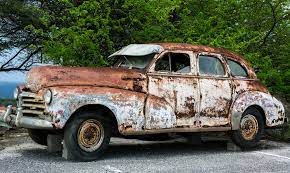

Lab X - Subject/Topic
Challenge
Restate the challenge of the lab here.
The challenge of the lab is to learn more about how arrays and objects are referenced and created.
Problems
What problems arose? How did you solve them?
Some problems that arose was coming up with a time to work on it with my partner, as we had conflicting schedules this week. However, we were able to make some sacrifices and come up with a time.
Reflection
Put your reflections about this assignment here. How did it go? What kind of energy did you put into the assignment?
This assignment seems very important, as I can think of a number of things where I could use this. The assignment went smoothly, with me putting in a lot of energy to understand the concepts.